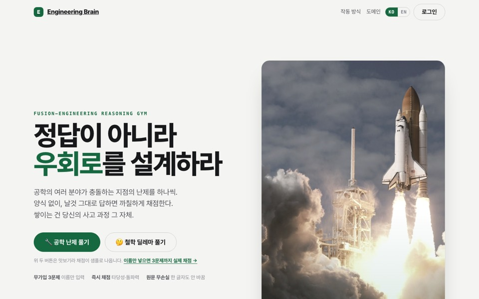
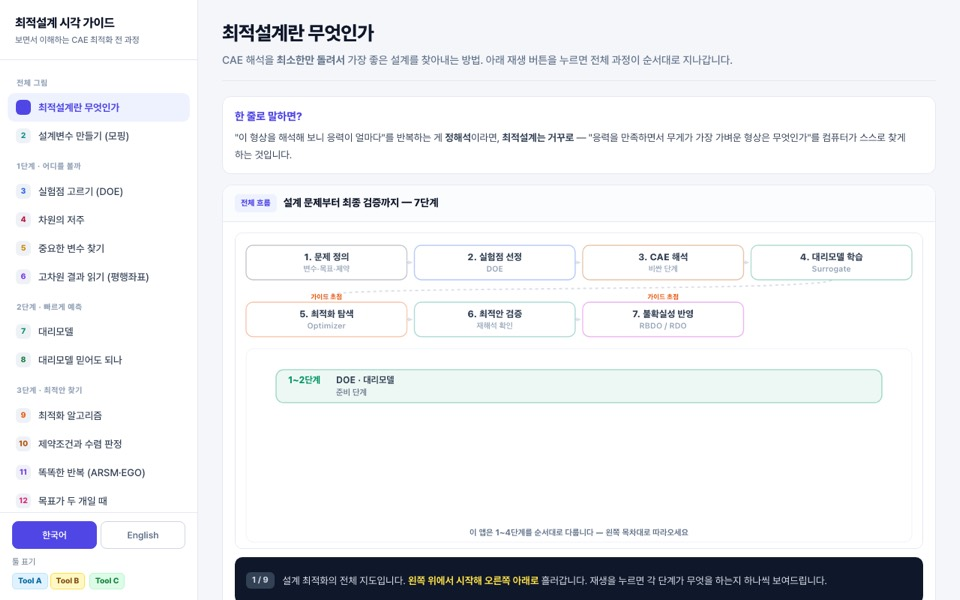
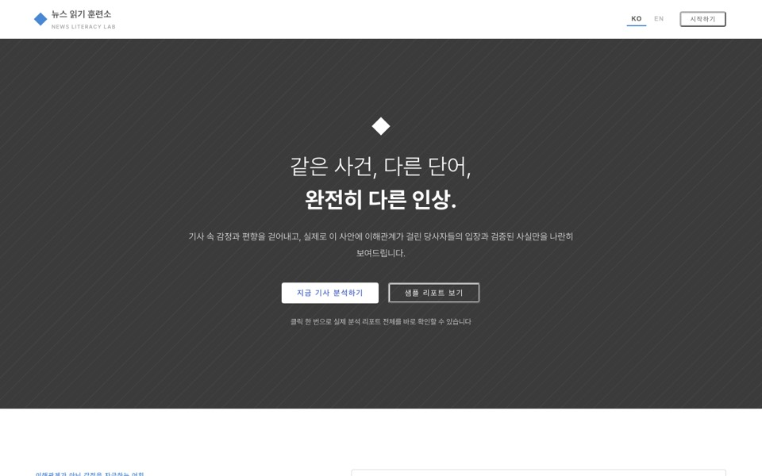
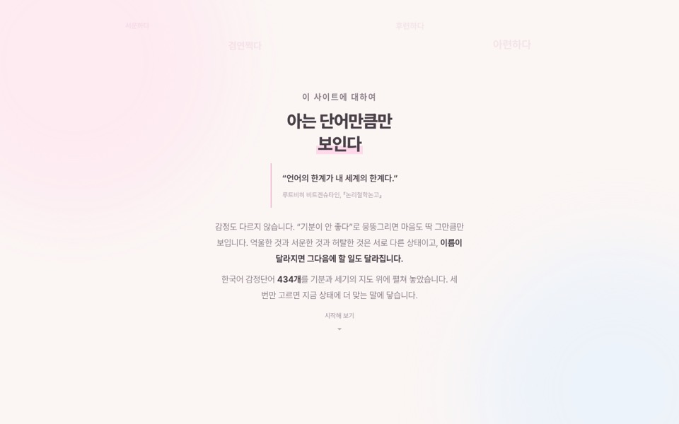
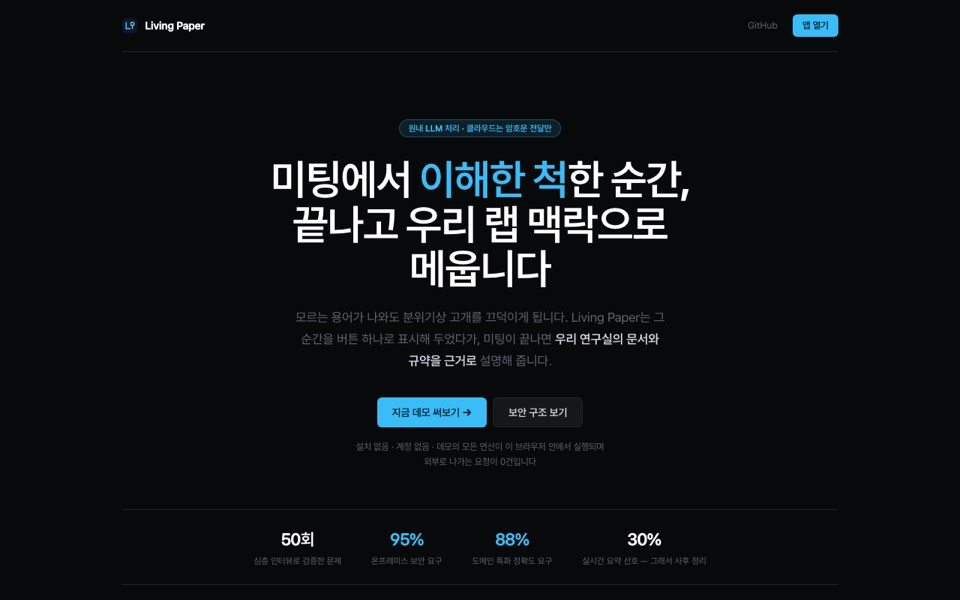
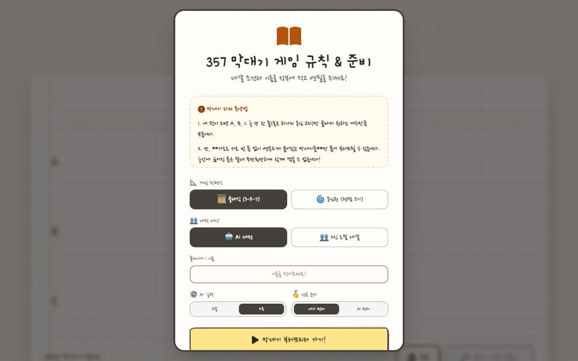
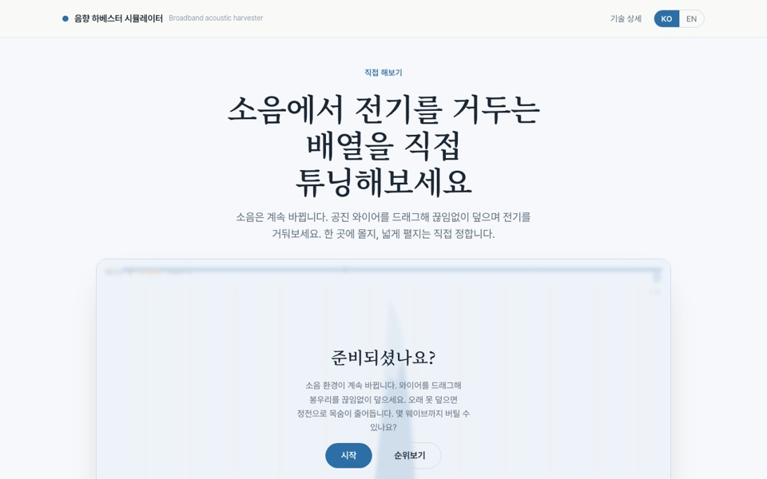
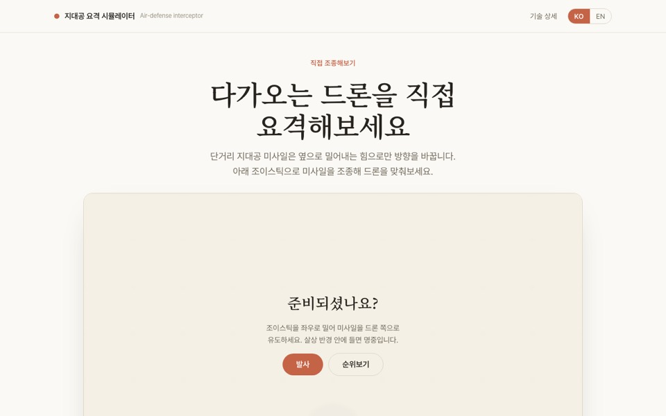
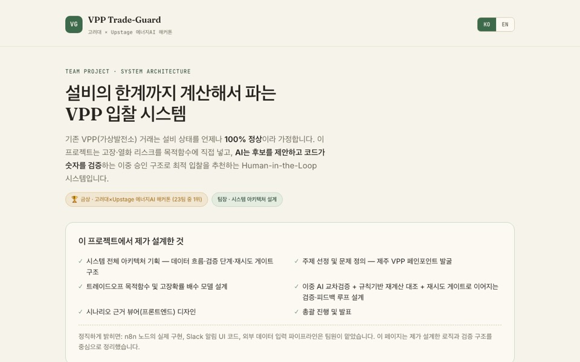

Things I built for study, for fun, or to run my own work. Lighter than the research, and most of it you can open right now. 공부하다가, 재미로, 또는 제 작업을 돌리려고 만든 것들입니다. 연구보다 가볍고, 대부분 지금 바로 열어 보실 수 있습니다.
Built and run by me, front end and back end.프론트와 서버까지 직접 만들고 운영합니다.

Poses an engineering dilemma with no right answer, takes your reasoning in your own words, and grades it.정답이 없는 공학 딜레마를 내고, 직접 쓴 답의 사고 과정을 채점합니다.
Open열기
Design of experiments, surrogates, optimizers and reliability, computed and drawn live in the browser.실험계획·대리모델·최적화·신뢰성을 브라우저에서 직접 계산해 그려 보여 주는 가이드입니다.
Open열기
Paste a news article and it maps who has a stake, who gets quoted, and who is left out.기사를 넣으면 이해관계자와 인용의 균형, 빠진 목소리를 분석합니다.
Open열기
Narrows 434 Korean emotion words in three steps until you can name what you feel. Korean only.한국어 감정 단어 434개를 세 단계로 좁혀, 지금의 감정에 이름을 붙입니다.
Open열기
The TeX-Corps team's prototype: a meeting assistant whose relay server only ever sees ciphertext.TeX-Corps 팀의 시제품입니다. 중계 서버가 암호문만 보도록 만든 회의 보조 도구입니다.
Open열기
A Nim-style game with rows of 3, 5 and 7 sticks, against the computer or a friend.3·5·7개 막대기 줄로 하는 님(Nim) 계열 게임입니다. 컴퓨터나 친구와 둘 수 있습니다.
Open열기Web versions of project work, simplified so anyone can try them.프로젝트 결과를 누구나 해 볼 수 있게 줄인 웹 버전입니다.

Drag resonant wires across a noise spectrum and see whether your array holds up in 11 environments.소음 스펙트럼 위에 공진 와이어를 배치하고, 11개 환경에서 버티는지 확인합니다.
Open열기
Steer a side-thruster interceptor yourself, then compare four optimization methods on the same problem.측면 추력기 요격기를 직접 조종해 보고, 같은 문제에서 최적화 기법 4종을 비교합니다.
Open열기
The hackathon project as a case study, with a what-if slider running the real objective function.해커톤 프로젝트의 케이스 스터디입니다. 실제 목적함수로 조건을 바꿔 볼 수 있습니다.
Open열기AI agents and several bots run on a Mac mini at home. Before letting them do more, I made sure they could not do damage quietly.집의 맥 미니에서 AI 에이전트와 봇 여러 개가 돌아갑니다. 일을 더 맡기기 전에, 조용히 사고를 내지 못하게 하는 장치부터 만들었습니다.
Local only, not public.로컬에서만 쓰며 공개하지 않습니다.